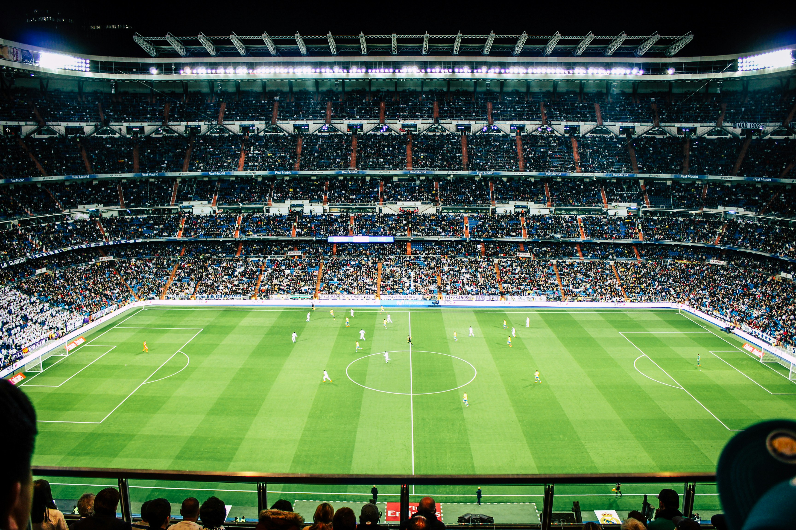

<link rel="stylesheet" href="navbar-entre-deportes.css" />

<section class="sports-selection">
  
  <nav>
    <ul>
      <li><a href="#" class="active">Todos</a></li>
      <li><a href="#">F&uacute;tbol</a></li>
      <li><a href="#">Baloncesto</a></li>
      <li><a href="#">Tennis</a></li>
      <li><a href="#">F1</a></li>
    </ul>
  </nav>
</section>